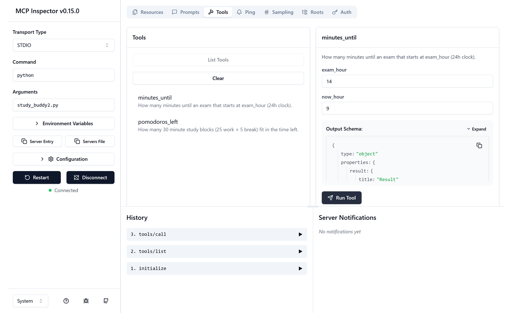

You do not need to know what an agent is to follow along. If you have ever used ChatGPT, Claude, GitHub Copilot or Cursor, you already have somewhere to plug MCP in. Everything below is copy-paste, and every code output on this page was produced by actually running it.
What MCP actually is
An LLM on its own is a very well-read person locked in a room with no phone. It can reason about your code, but it cannot open your files. It can talk about your database, but it cannot query it.
The Model Context Protocol is how you pass things into that room. It is an open standard, published by Anthropic and now supported across Claude, ChatGPT, VS Code, Cursor and others, that describes one way for AI applications to talk to outside systems.
The official analogy is a good one: MCP is USB-C for AI applications. Before USB-C, every device had its own cable. Now one port fits everything.
Worth knowing before you invest an hour: you do not need MCP to build an AI agent. Plain function calling works perfectly well, and our Build an AI Agent guide does exactly that. MCP earns its keep the moment you want the same tool to work in more than one app, or you want to use somebody else's tool without writing the glue yourself.
The problem it solves
Before MCP, if you had 4 AI apps and wanted each to reach 5 systems (files, GitHub, Postgres, Slack, Jira), somebody had to write 20 separate integrations. Every app reinvented the same connector, slightly differently.
That is the M times N problem. MCP turns it into M plus N: each app speaks MCP once, each system exposes MCP once.
😩 Without MCP
- Every app writes its own connector
- Your tool only works in the app you built it for
- Change the API, fix it in four places
- No shared idea of permissions or discovery
🙂 With MCP
- Build the connector once
- It works in any MCP-capable app
- Fix it in one place
- Discovery, schemas and errors are standardised
How the pieces fit together
Three words come up constantly, and they are easy to mix up. The host is the app you actually use. It creates one client per connection. Each client talks to one server.
A useful rule: server does not mean cloud here. Most MCP servers you will meet are small programs running on your own laptop, talking over standard input and output (the same plumbing you use when you pipe one terminal command into another). Nothing leaves your machine unless the server itself makes a network call.
What actually happens when you ask a question
Follow the dot. Four steps, and only one of them involves you.
What a server can offer
An MCP server exposes up to three kinds of thing. Most servers only bother with the first.
The distinction that matters: the model decides when to call a tool, whereas resources and prompts are pulled in deliberately. That is why tools are the ones that need your permission.
Use one today, in about five minutes
You do not have to build anything to benefit. Connect an existing server to an app you already use.
In VS Code with GitHub Copilot
Create .vscode/mcp.json in your project:
{
"servers": {
"filesystem": {
"command": "npx",
"args": ["-y", "@modelcontextprotocol/server-filesystem", "."]
}
}
}In Claude Desktop
Settings, then Developer, then Edit Config. Add:
{
"mcpServers": {
"memory": {
"command": "npx",
"args": ["-y", "@modelcontextprotocol/server-memory"]
}
}
}Wrap npx with cmd /c, or the server will not start:
"command": "cmd", "args": ["/c", "npx", "-y", "..."]. Servers launched with uvx do not need this.
Restart the app, and it will list the new tools. Official reference servers worth trying:
| Server | What it gives the model | Command |
|---|---|---|
| Filesystem | Read and write files in folders you allow | npx @modelcontextprotocol/server-filesystem |
| Git | Read, search and manipulate a repo | uvx mcp-server-git |
| Fetch | Pull a web page in as clean text | uvx mcp-server-fetch |
| Memory | Persistent notes across conversations | npx @modelcontextprotocol/server-memory |
uvx is the Python equivalent of npx. If you do not have it, run pip install uv first. There are hundreds more servers in the MCP Registry. Read the security section below before you install one you did not write.
Build your own server
Writing the server is the part people assume is hard, and it is the easy part. Here is a complete, working MCP server that helps you plan revision. Install the SDK first:
pip install mcpThen study_buddy.py:
from mcp.server import MCPServer
mcp = MCPServer(name="study-buddy")
@mcp.tool()
def minutes_until(exam_hour: int, now_hour: int) -> str:
"""How many minutes until an exam that starts at exam_hour (24h clock)."""
mins = (exam_hour - now_hour) * 60
if mins <= 0:
return "That exam has already started."
return f"{mins} minutes until your exam."
@mcp.tool()
def pomodoros_left(minutes: int) -> str:
"""How many 30 minute study blocks (25 work + 5 break) fit in the time left."""
return f"You can fit {minutes // 30} pomodoros (25 min work + 5 min break)."
@mcp.resource("syllabus://dsa")
def dsa_syllabus() -> str:
"""The DSA topics to revise, in priority order."""
return ("Arrays, Hashing, Two Pointers, Sliding Window, "
"Binary Search, Trees, Graphs, DP")
if __name__ == "__main__":
mcp.run()That is the whole server. Three things are worth noticing:
- The docstring is not a comment, it is the description the model reads to decide whether to call your tool. Write it for the model.
- The type hints are the schema.
exam_hour: intbecomes a validated integer parameter automatically. - You never wrote any JSON. The SDK generates it.
What the model actually sees
Here is the real output from connecting a client to that exact server. This is not illustrative: it is what the protocol returned.
name : minutes_until
description : How many minutes until an exam that starts at exam_hour (24h clock).
inputSchema : {
"type": "object",
"properties": {
"exam_hour": {"title": "Exam Hour", "type": "integer"},
"now_hour": {"title": "Now Hour", "type": "integer"}
},
"required": ["exam_hour", "now_hour"]
}Your Python type hints became a JSON Schema. The model reads this and works out how to call you.
> minutes_until(exam_hour=14, now_hour=9)
300 minutes until your exam.
> pomodoros_left(minutes=300)
You can fit 10 pomodoros (25 min work + 5 min break).
> read_resource("syllabus://dsa")
Arrays, Hashing, Two Pointers, Sliding Window, Binary Search, Trees, Graphs, DPWhat happens when the model gets it wrong
Models do send nonsense sometimes. Here is what came back when the client called minutes_until(exam_hour="banana"), with the second argument missing entirely:
Error executing tool minutes_until: 2 validation errors
exam_hour
Input should be a valid integer, unable to parse string
as an integer [input_value='banana', input_type=str]
now_hour
Field required [type=missing]Your function was never called. The error goes back to the model as a normal result, so it can read it and retry with better arguments. You get this for free from the type hints, which is a real argument for writing them properly.
Poke at it yourself with the Inspector
Before wiring a server into a real app, test it in isolation. The official MCP Inspector connects to any server and lets you list and call things by hand:
npx @modelcontextprotocol/inspector python study_buddy.pyThis is that exact server, running in the Inspector. The History panel on the left is the actual protocol traffic: initialize, then tools/list, then tools/call.

If it works here, it will work in VS Code or Claude Desktop. If it does not, you have a much smaller problem to debug.
Before you install someone else's server
This is the part most tutorials skip, and it matters more than any of the above.
An MCP server is a program running on your machine with your permissions. A server with filesystem access can read anything you can read. One with network access can send it anywhere.
They are published as educational examples, not hardened production software. Treat every third-party server the way you would treat a browser extension that asked for access to all your files.
- Prefer servers you can read. Most are small. Open the source before you run it.
- Scope the filesystem server. Pass a specific folder, never your home directory or
/. - Watch for prompt injection. If a server returns text from the internet, that text can contain instructions aimed at your model. This is a live, unsolved problem.
- Keep secrets in environment variables, not in the config file you might commit.
- Approve tool calls individually while you are learning. Do not switch on auto-approve for anything that writes or sends.
Quick check
Four questions. No score is recorded anywhere.
What MCP is not
Worth saying plainly, because the hype is loud:
- It does not make a model smarter. It gives a model reach. A weak model with great tools is still a weak model.
- It is not required to build an agent. Plain function calling works fine. MCP pays off when you want your tool to work in more than one app.
- It is young and still moving. The spec is versioned by date and things do change between versions. Learn the shape, not the trivia.
- It does not solve permissions for you. Deciding what a model is allowed to do is still your job.
What to do next
In order, smallest first:
- Connect the filesystem server to VS Code or Claude Desktop, scoped to one project.
- Run the server on this page and call it from the MCP Inspector.
- Replace the study tools with something from your own life: your notes, your college timetable, your git log.
- Put it on GitHub with a clear README. A working server is small enough to explain in an interview and current enough that few people have one.